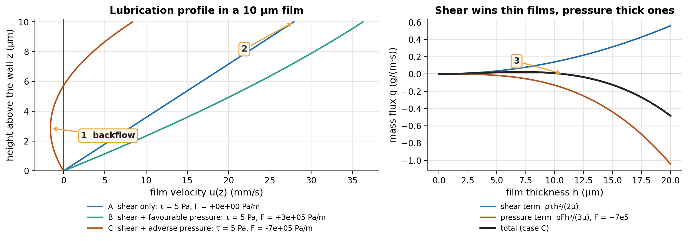
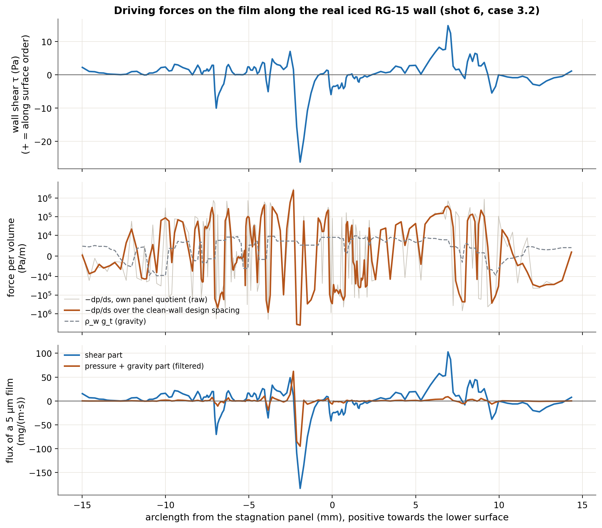
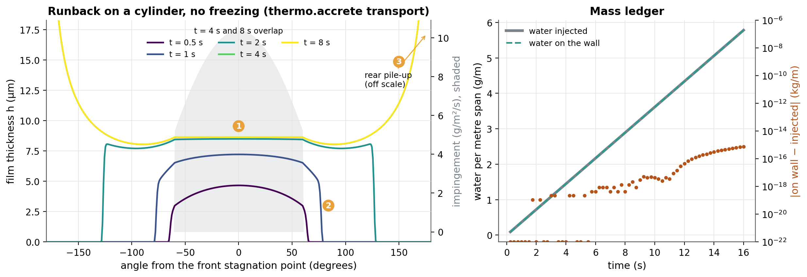
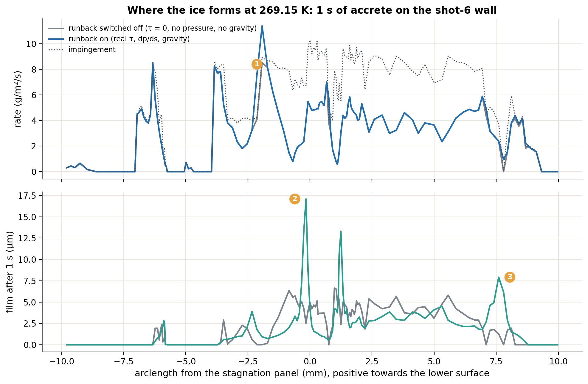
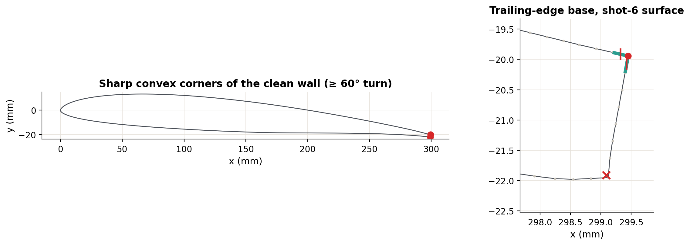
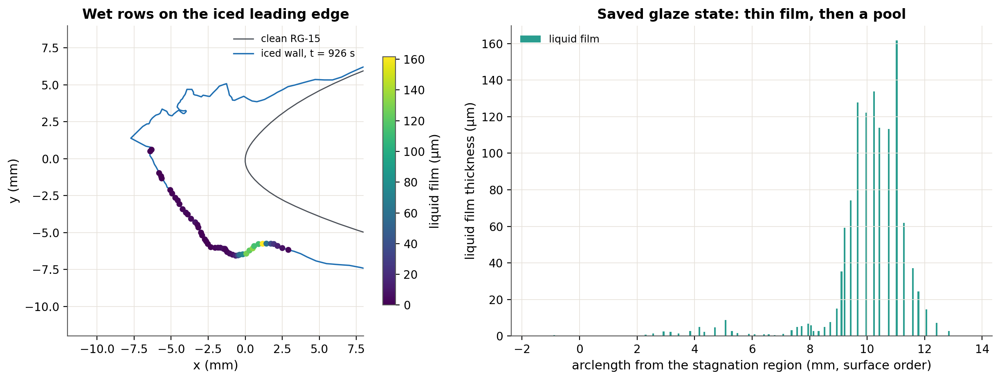
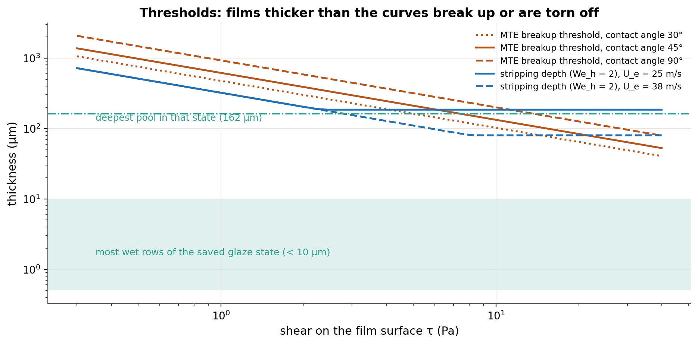

Water film and runback
In glaze conditions not all the water freezes where it lands. The rest forms a film a few micrometres thick that the air drags back along the surface, where it may freeze later. This page explains how the solver moves that water, and why where it ends up decides the shape of glaze ice.
- What runback is Basic
- The lubrication film Basic
- The real forces on the RG-15 wall Intermediate
- Moving water between panels Intermediate
- A runback demonstration Intermediate
- What runback does to ice and film Intermediate
- Runback on the conducting (nodal) path Advanced
- Exits at sharp corners Advanced
- The glaze film: depth bins, air and breakup Advanced
- Assumptions and limits Advanced
What runback is Basic
On the previous page, each wall panel split its water into ice, vapour and liquid. In rime conditions the liquid part is zero. In glaze conditions it is not: the panel stays at 0 °C and keeps a thin film of water. That film does not sit still. Three forces push it along the surface:
- air shear: the air flowing over the film drags its surface along;
- pressure gradient: water is pushed from high wall pressure (the stagnation point) towards low pressure;
- gravity: its component along the surface.
Water carried from one panel to the next is called runback. It can freeze further back on the airfoil than where it landed, which is how glaze builds its typical horns and ridges. The solver therefore alternates two operations in every short substep: move the film (this page), then freeze part of it (Step 5).
The film is so thin and slow that it behaves like honey between a fixed plate (the wall) and a moving one (the air). Its velocity can be written down exactly. From it follows how many kilograms per second cross each panel edge. The solver moves the water panel to panel with that flux, in small time steps, never losing or creating a drop.
The lubrication film Basic
The film is thin (micrometres) and slow (millimetres to centimetres per second), so inertia does not matter: viscous stress balances the applied forces at each height \(z\) above the wall. MODELS.md writes this local momentum balance as
$$ \mu\, \frac{\partial^2 u}{\partial z^2} + F = 0, \qquad u(0) = 0, \qquad \mu \frac{\partial u}{\partial z}\Big|_{z=h} = \tau , $$with \(\mu\) the water viscosity (\(1.792\times10^{-3}\) Pa s, MU_W in icing/thermo.py), \(h\) the film thickness and \(\tau\) the air shear. The two conditions say the water does not slip on the wall and the air drags the film surface with stress \(\tau\). Solving gives the velocity profile, written in profile_runback.transport_liquid_profile() as
Integrating over the depth and multiplying by the water density gives the mass flux per metre of span, the formula at the heart of all runback in the solver (thermo.accrete() docstring):
The shear part grows with \(h^2\), the pressure-and-gravity part with \(h^3\). For thin films shear dominates; for thicker films the pressure gradient catches up.

The real forces on the RG-15 wall Intermediate
The shear and pressure come from the CFD solution (Step 3). fields.wall_fields() projects the SU2 skin-friction vector onto each panel's tangent, so the sign of \(\tau\) says in which direction along the surface the air drags. Figure 3 shows the forcing on the iced RG-15 airfoil in shot 6 of case 3.2.

results_32/shot_06/flow/surface_flow.vtu. Top: wall shear. It changes sign several times around the stagnation region and the horns (wall shear ranges from −26.2 to +14.7 Pa on this wall); where it points towards a point from both sides, water converges. Middle: the pressure-gradient force on a symmetric-log scale. Thin grey: each panel's own pressure difference; orange: the secant slope over the clean wall's design spacing (nodal_loads.panel_pressure_gradient() with film_forcing_length: "design"); dashed: gravity. Bottom: the two flux contributions for a 5 µm film. Shear carries most of the water; the pressure term matters only at the few spots where the gradient is around \(10^6\) Pa/m.The spiky pressure gradient has a story. Wall refinement inserts short panels between the sharp facet corners of the polygonal ice shape, and the CFD returns a suction spike at every such corner. PHYSICS_REVIEW.md (2026-11-14) records nodal gradients of \(\pm10^6\) to \(5\times10^6\) Pa/m with alternating sign on 73–85 µm panels. The lubrication model has no surface tension, which in a real film would smooth such short-wavelength forcing. Without it, the model once collected water in the "wells" between corners until it stood 0.77 mm deep, and the transport time step collapsed. The fix is a low-pass filter on the forcing: on panels shorter than the clean wall's design spacing, panel_pressure_gradient() takes the secant slope of the wall pressure over a window of that length. The docstring is candid that this is "a low-pass filter of the forcing, not a capillary model". On the shot-6 wall the panels are 26 to 1040 µm long and the design spacing 220 to 1000 µm; within ±15 mm of the stagnation panel the filter lowers the root-mean-square gradient only from \(5.4\times10^5\) to \(4.5\times10^5\) Pa/m, and the largest value stays about \(4\times10^6\) Pa/m. The filter removes cell-scale forcing; it does not remove gradients resolved over the design spacing.
Moving water between panels Intermediate
The wall is a closed polygon of panels. Each panel stores its film as a mass per metre of span, not as a thickness; the thickness is reconstructed as \(h = M/(\rho_w L)\) with \(L\) the panel length (MODELS.md). Water moves through the vertices that join neighbouring panels. This is a finite-volume method: what leaves one panel through a face enters the next one, so the total is conserved to rounding error.
Panel path: icing/thermo.py → accrete() (transport loop) and film_energy.transport_film_energy() (optional sensible energy). Nodal path: icing/nodal_phase.py → NodalBoundary.transport(), driven by nodal_increment.advance_nodal_increment() inside the coupling step nodal_coupling.advance_coupled_nodal_step(); loads from nodal_loads.nodal_loads_from_snapshot(); wall changes via film_remap.remap_surface_film(). Glaze path: profile_runback.transport_liquid_profile(), phase_column_runback.transport_phase_columns(), film_air.py, film_breakup.py, runback_exits.py.
The flux through each face comes from the lubrication formula, evaluated on both sides and blended with a Rusanov (local Lax–Friedrichs) flux:
$$ q_{i+1/2} = \tfrac12\big[q(h_i) + q(h_{i+1})\big] - \tfrac12\, a_{i+1/2}\, \rho_w\, (h_{i+1} - h_i), \qquad a = \frac{|\tau|\,h_\text{max}}{\mu} + \frac{|F|\,h_\text{max}^2}{\mu}. $$\(a\) is an upper bound on the speed at which a change in thickness travels along the film (the derivative of \(q/\rho_w\) with respect to \(h\), bounded with the larger of the two thicknesses). The second term adds just enough numerical smoothing to keep the method stable whichever way the forces point, including where shear and gravity compete.
while elapsed < dt * (1 - 1e-14):
height = water / (RHO_W * length)
# Local Lax-Friedrichs/Rusanov flux handles shear/gravity competition.
h_right = np.roll(height, -1)
flux_l = RHO_W * (tau * height**2 / (2*MU_W) + force * height**3 / (3*MU_W))
flux_r = RHO_W * (tau * h_right**2 / (2*MU_W) + force * h_right**3 / (3*MU_W))
hmax = np.maximum(height, h_right)
wave = np.abs(tau) * hmax / MU_W + np.abs(force) * hmax**2 / MU_W
flux = .5 * (flux_l + flux_r) - .5 * wave * RHO_W * (h_right - height)
cfl_dt = np.min(.45 * length / np.maximum(wave + np.roll(wave, 1), 1e-30))
step = min(dt - elapsed, max_substep, cfl_dt)
incoming = step*(np.maximum(np.roll(flux,1),0)+np.maximum(-flux,0))
outgoing = step*(np.maximum(flux,0)+np.maximum(-np.roll(flux,1),0))
runback_in += incoming
runback_out += outgoing
water += incoming-outgoing
if np.min(water) < -1e-14:
raise RuntimeError('Negative film mass after transport')
... # then the phase solve on every panel
tauandforcelive on faces:accrete()averages the two adjacent panels' signed shear and tangential gravity, and takes the pressure gradient as the difference of adjacent panel-centre pressures divided by the distance between the centres. Only pressure differences enter, so adding a constant to the pressure changes nothing (MODELS.md).np.roll(..., -1)is the neighbour downstream in surface order; the face \(i+\tfrac12\) joins panel \(i\) to \(i+1\), and the last panel joins the first. That is the closed, periodic topology.- The CFL condition picks the substep: no wave may cross more than 0.45 of a panel, counting both of its faces. Thicker water or shorter panels mean smaller steps. A hard cap (
max_substeps, 200,000) stops a run whose step collapses ("Film transport substep limit exceeded"). incomingandoutgoingare gross transfers, accumulated asrunback_inandrunback_out: the per-panel ledger and the freezing fraction of Step 5 use them.
A film cannot have negative mass. The Rusanov flux with this CFL limit keeps every panel non-negative in exact arithmetic (MODELS.md: "conserve mass and protect positivity"). The code still checks: anything below \(-10^{-14}\) kg/m raises instead of being silently clipped, and tiny rounding negatives are set to zero. After the whole interval, the global ledger (initial film + impingement = ice + film + evaporation) and the per-panel ledger must each close to \(10^{-10}\) of the supplied water, or accrete() raises.
A runback demonstration Intermediate
To watch the transport alone, the script below calls the real thermo.accrete() on a toy circular wall (radius 20 mm, 400 panels) in a configuration where nothing can freeze: air and droplets exactly at \(T_m\), no air speed for recovery heating, no evaporation. The phase solve then returns zero ice and the film is pure transported water. Water is injected near the front with a cylinder-like collection efficiency (\(0.8\cos\theta\) within ±60°, times 0.52 g/m³ × 25 m/s, the RG-15 values), and the shear \(\tau = 10\sin\theta\) Pa pushes it away from the front stagnation point on both sides. Both distributions are illustrative inputs, not a CFD solution.

Point ③ is not a numerical accident. MODELS.md states it directly: "there is currently no trailing-edge shedding model. Water reaching the base of a blunt trailing edge can remain or pass around it". The same convergence happens on real iced airfoils at a separation line behind a horn, where PHYSICS_REVIEW.md (2026-11-14, diagnostic D1) found runback water collecting up to 1.2 mm deep. The exits and stripping described in the advanced sections are the solver's responses.
What runback does to ice and film Intermediate
Now with freezing. The same accrete() runs for 1 s at the case 3.2 temperature on the real shot-6 wall, with real HTC, impingement, shear, pressure and gravity, starting from a dry wall. A second run switches runback off (zero shear, pressure and gravity), so every drop must freeze or wait where it landed. One second is short, but long enough to show the pattern; longer runs on this wall slow down sharply, for a reason that is itself the point of this section (below).

thermo.accrete(). Top: ice formation rate, with runback (blue) and without (grey); dotted: impingement. On wet panels the two curves coincide: a panel held at 0 °C freezes exactly what its cooling allows, however much water it has. ① Runback changes the ice only where a panel had cooling to spare, typically a dry-branch panel next to wet ones: at −2.1 mm, for example, it freezes 7.6 g/(m² s) of ice from 4.3 g/(m² s) of impingement, the largest excess on this wall. Total ice rises by only 1.6 % in this second. Bottom: the film. Without runback it mirrors the local surplus (up to 6.6 µm). With runback it is drained from most panels and collects in peaks: ② 17 µm at −0.16 mm and ③ about 8 µm at +7.6 mm, where the wall shear in Figure 3 changes sign and pushes water together from both sides.The peaks keep growing. A diagnostic run on the same wall and temperature, with shear only (no pressure gradient or gravity) and continued in quarter-second calls, put the deepest film beside the stagnation panel at 1.9, 7.9, 15.4 and 23.1 µm after 0.25, 0.5, 0.75 and 1 s, while the transport substeps per quarter second rose from 27 to 228, because the CFL step shrinks as the pool deepens. This is the panel-path version of what the glaze campaigns met on the horn (PHYSICS_REVIEW.md, 2026-11-14): a lubrication film has no way to leave a line where the shear converges, so water accumulates there until something else (freezing, exits, stripping) removes it.
Figures 4 and 5 use the panel path (thermo.accrete). The rime campaigns use the nodal transport below; the glaze campaigns use the depth-resolved transport of the phase-aware path. The physics of the flux is the same lubrication law in all three.
Runback on the conducting (nodal) path Advanced
When the ice and airfoil are a conducting finite-element solid, the film lives on the solid's wall nodes instead of on panels: each wall node owns a dual cell made of half of each adjacent boundary edge. nodal_phase.NodalBoundary.transport() applies the same lubrication flux and Rusanov blend across each boundary edge, with a CFL step based on the sum of wave speeds into each dual cell. The loads are prepared by nodal_loads.nodal_loads_from_snapshot(): shear signed along each edge, and the edge force \(\rho_w g_t - dp/ds\) with the pressure taken linear along each original CFD panel, so that split solid edges need no extrapolation.
while elapsed<dt:
height=mass/(RHO_W*self.lengths)
left,right=height[a],height[b]
high=np.maximum(left,right)
wave=(abs(tau)*high+abs(force)*high**2)/MU_W
flux=lambda h: RHO_W*(tau*h*h/(2*MU_W)+force*h**3/(3*MU_W))
rate=.5*(flux(left)+flux(right))-.5*wave*RHO_W*(right-left)
wave_sum=np.bincount(self.edges.ravel(),weights=np.repeat(wave,2),minlength=len(mass))
step=min(dt-elapsed,float(np.min(.45*self.lengths/np.maximum(wave_sum,1e-30))))
moved=step*rate
# outlets: each side discharges only outward; nothing crosses the cut
left_loss=np.where(outlets,step*np.maximum(flux(left),0.),0.)
right_loss=np.where(outlets,step*np.maximum(-flux(right),0.),0.)
moved[outlets]=0.
...
if energy is not None: # sensible energy rides with the donor's mass
specific=np.divide(energy,mass,out=np.zeros_like(energy),where=mass>0)
...
mass=mass-outgoing+incoming
advance_nodal_increment() (icing/nodal_increment.py) calls this transport, then the coupled phase solve, in every thermal substep (5 ms in the RG-15 campaigns, thermal_step in the case files). It checks that film + ice + evaporation + runoff equals initial film + impingement to \(10^{-10}\).
When the wall changes shape, the film must follow. film_remap.remap_surface_film() transfers each old dual-cell inventory onto the new dual cells by the overlap of normalised panel arclength, with weights that sum to one for every donor, so mass and sensible energy are conserved exactly ("Film remap conservation audit failed" otherwise). Its docstring warns that this first-order projection can mix donor temperatures and is not a flow model.
Verification of the nodal transport
NODAL_RUNBACK_VERIFICATION.md records two independent checks against exact solutions of the thickness equation \(h_t + \partial_s[\tau h^2/(2\mu) + F h^3/(3\mu)] = 0\), on a periodic 4 m loop with 32 to 256 dual cells:
- Smooth film solved by characteristics. Mean thickness errors fall by ratios 0.496, 0.499, 0.500 (shear case) and 0.507, 0.503, 0.501 (opposing shear and force) per doubling: first-order convergence, as predicted, with zero mass residual (
runs/nodal_runback_characteristics_001/report.json). - Wet patch advancing into dry wall, against the exact shock-and-rarefaction solution. L1 error ratios 0.698, 0.668, 0.502 (shear) and 0.655, 0.482, 0.583 (body force); mass residual at most \(2.8\times10^{-17}\) kg/m; the film stays non-negative and below its initial height (
runs/nodal_dry_front_001/report.json).
The document is clear about what these do not establish: contact-line physics, capillarity, freezing/runback splitting accuracy or realistic icing behaviour.
Exits at sharp corners Advanced
A closed wall keeps all its water (Figure 4, ③). A real airfoil sheds water at its trailing edge. The solver models this with prescribed absorbing cuts (RUNBACK_EXITS.md). At a cut, each side discharges only its own outward lubrication flux, \(\max(q(h_a), 0)\) from one side and \(\max(-q(h_b), 0)\) from the other; no water crosses the cut and none enters from outside. The escaping water takes its sensible enthalpy with it, and both are recorded (runoff_mass, runoff_energy) so the ledgers still close.
On the glaze campaign path, "outlet_panels": "sharp_corners" finds the cuts automatically (icing/runback_exits.py). corner_vertices() marks convex vertices of the clean wall whose exterior turning angle is at least 60°; sharp_corner_outlets() cuts the two panels meeting at each such corner on the current surface, but only while the wall there is still clean (the vertex and both clean neighbours are present). Sharp features of the ice shape are never exits.

corner_vertices() finds (red): the two corners of the 2 mm blunt trailing-edge base. Right: zoom on the base of the shot-6 surface. The exit panels returned by sharp_corner_outlets() are drawn thick green, with a red tick at each panel's midpoint, where the cut sits. Only the upper corner (clean vertex 0, dot) gets an exit. The lower corner (clean vertex 883, cross) is skipped: neither it nor its lower neighbour exists at its clean coordinates in the shot-6 surface, so sharp_corner_outlets() lists it under skipped_clean_corners. The campaign ledger records the same for shots 5 and 6 (exit_corners in ice/summary.json and progress.json), so in case 3.2 water reaching the lower base corner had no exit.runback_exits.py states it plainly: the cut is "the quasi-steady limit in which everything that arrives is shed. It is not a force balance." For icing films the film Weber number \(\rho u^2 h/\sigma\) is of order \(10^{-4}\), so a film would not leave a corner by inertia; real shedding happens by pooling and intermittent stripping of beads. Water that should physically pool and freeze at the corner is removed instead. The basis in NASA's GlennICE SWIM study supports the lubrication profile, not this particular exit condition.
The glaze film: depth bins, air and breakup Advanced
The glaze campaigns (the phase-aware path of Step 10) store water and ice in vertical columns on each wall node. Only the fully liquid part of a column that is open to the air, the "mobile cap", runs back: phase_column_runback.transport_phase_columns() keeps crusts and enclosed water in place and hands the cap to profile_runback.transport_liquid_profile().
Depth-resolved transport
transport_liquid_profile() splits the film into equal-mass depth bins (four in the RG-15 campaigns, depth_cells). Each bin moves with the integral of \(u(z)\) over its own height, so a counterflowing film (Figure 2, case C) sends its bottom bins one way and its top bins the other. Each bin carries its own sensible energy with its own donor mass. After each substep the bins are re-cut to equal mass conservatively (_rebin()). The time step is set by donor positivity: no bin may export more than 0.45 of its mass in one substep. PHYSICS_REVIEW.md ("Resolved-profile runback approximation") calls this a first-order layer model that can mix vertical structure; there is no vertical conduction or phase change inside the transport.
Two validity controls protect it on refined iced walls (PHYSICS_REVIEW.md, 2026-11-14), both used by case 3.2: film_forcing_length: "design" (the forcing filter above) and film_inertial_limit: true, which caps each donor's speed at the speed water could reach from rest under the work done over one edge, \(\sqrt{2W/\rho_w}\). For ordinary thin films the cap factor is exactly one; it only slows deep, pooled water, for which lubrication would predict hundreds of metres per second.
Where the film really is

results_32/shot_06/ice/slot_0/history.json; the liquid is computed with PhaseColumns.phase()). Left: clean RG-15 (grey) and the iced wall (blue), with the wall nodes that hold liquid coloured by film thickness. Right: liquid film thickness per wall node. 48 of 1039 wall nodes hold liquid, 3.0 × 10−4 kg/m in total. 34 of them carry less than 10 µm, a thin film spread over the lower side of the stagnation region. Further back, about 9 to 12 mm along the lower surface, the water stands up to 162 µm deep. The shot-6 wall shear of Figure 3 changes sign near 9.3 mm (positive before, negative after), so the air drives water into this band from both sides: the convergence that PHYSICS_REVIEW.md (2026-11-14, diagnostic D1) identified as the cause of runback pooling.Film in the air's inner layer, and stripping
The basic model applies the CFD wall shear to the film surface. film_air.py (opt-in film_air_coupling, on in case 3.2) refines this with three statements from its docstring. First, near the wall the air's shear stress varies as \(\tau(y) = \tau_w + y\,dp/ds\), so the stress on a film of depth \(h\) is \(\tau(h)\), not \(\tau_w\). At a separation point, where \(\tau_w = 0\), this gives a net downstream flux \(q/\rho_w = (dp/ds)\,h^3/(6\mu_w)\) instead of none. Second, that law is used only up to a cap height where it stops being valid (velocity maximum, edge speed, or backflow without adverse gradient). Third, water standing up into fast air is torn off where the height Weber number \(\rho_\text{air}\,u(h)^2 h/\sigma\) exceeds 2. The number 2 comes from a pressure balance with an assumed crest shape and is "known only to a factor of a few"; strip_weber is exposed so the sensitivity can be tested.
Breakup into rivulets
film_breakup.py implements the minimum-total-energy (MTE) criterion: a film breaks into rivulets when a rivulet pattern carrying the same flow has lower kinetic plus surface energy. The critical thickness falls with shear as \(\tau^{-2/3}\). It is opt-in and off in case 3.2, because Gosset (2017) found MTE thresholds well above films that were observed to stay continuous on a NACA 0012 (GLAZE_SWIM.md).

FilmBreakup.critical_thickness() for three contact angles (orange) and AirInnerLayer.strip_depth() for zero pressure gradient and two edge speeds (blue). At 5 Pa the MTE threshold is 210 µm for a 45° contact angle; the stripping depth is 185 µm at 25 m/s. Both lie one to two orders of magnitude above the thin film that covers most wet rows of the saved glaze state (green band), so neither mechanism acts on an ordinary glaze film. The deepest pool of that state (162 µm, dash-dot) is of the same order as both thresholds: they matter exactly where water pools, as at separation lines. At 25 m/s and above about 2 Pa the stripping depth is the edge-speed limit \(2\sigma/(
ho_\text{air}U_e^2)\), independent of shear.Freezing inside the film
How the glaze columns freeze from the wall upward is the subject of Step 10. For orientation: liquid_freezing.freeze_liquid_columns() withdraws liquid from the bottom up for a given heat budget; film_thermal_freezing.advance_film_thermal_freezing() connects liquid-column conduction and solid contact to that withdrawal and to conforming ice growth; and the campaign setting film_ice_settling places ice formed inside the film at its base, the Messinger/SWIM assumption that ice grows under a flowing film (GLAZE_SWIM.md, "Sharp basal freezing front").
Assumptions and limits Advanced
- Lubrication. Valid for thin, slow films whose forcing varies over lengths much larger than the film depth. No inertia (except the opt-in speed cap), no surface tension or capillary levelling, no contact angle, no contact-line physics.
- First order. The Rusanov scheme is first order in space; the transport/freezing splitting is first order in time. Verification shows the expected first-order convergence, not more.
- Closed wall by default. Without exits, water stays on the wall (no shedding). Exits are prescribed absorbing cuts, not a detachment prediction; stripped water is not tracked further (no re-impingement).
- Constant water properties (viscosity of water near 0 °C) and no mechanical work or viscous heating in the thermal balance (MODELS.md).
- Rivulets: the MTE closure is unvalidated for sheared films and off by default.
- Verified, not validated. The transport converges to exact solutions of its own equations. Whether the real film on an iced RG-15 behaves like this has not been tested against experiment.